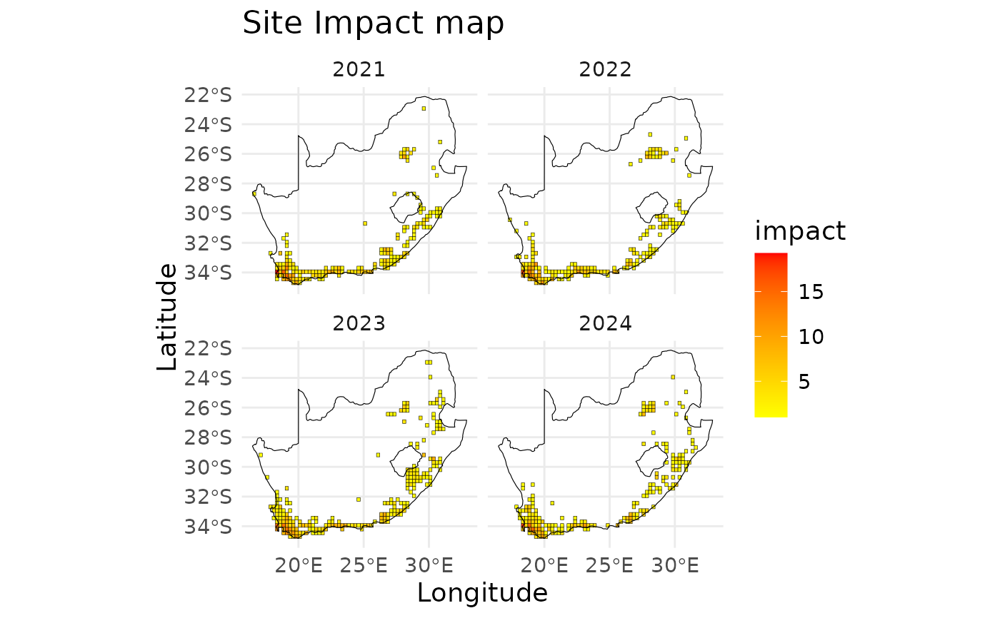

Produces the yearly impact map of a region
Usage
# S3 method for class 'site_impact'
plot(
x,
region.sf = NULL,
first_year = NULL,
last_year = NULL,
title_lab = "Impact map",
text_size = 14,
...
)Arguments
- x
A dataframe of impact indicator. Must be a class of "site_impact"
- region.sf
The shapefile of the region of study. It is not compulsory but makes the plot more comprehensible.
- first_year
The first year the impact map should include. Default starts from the first year included in
x.- last_year
The last year the impact map should include. Default ends in the last year included in
x.- title_lab
Title of the plot. Default is "Impact map"
- text_size
The size of the text of the plot. Default is "14"
- ...
Additional arguments passed to geom_tile
Examples
# define cube for taxa
acacia_cube <- taxa_cube(
taxa = taxa_Acacia,
region = southAfrica_sf,
res = 0.25,
first_year = 2010
)
# compute site impact
siteImpact <- site_impact(
cube = acacia_cube$cube,
impact_data = eicat_data,
col_category = "impact_category",
col_species = "scientific_name",
col_mechanism = "impact_mechanism",
trans = 1,
type = "precautionary cumulative",
coords = acacia_cube$coords
)
# visualise site impact
plot(x=siteImpact,
region.sf= southAfrica_sf,
first_year = 2021)
